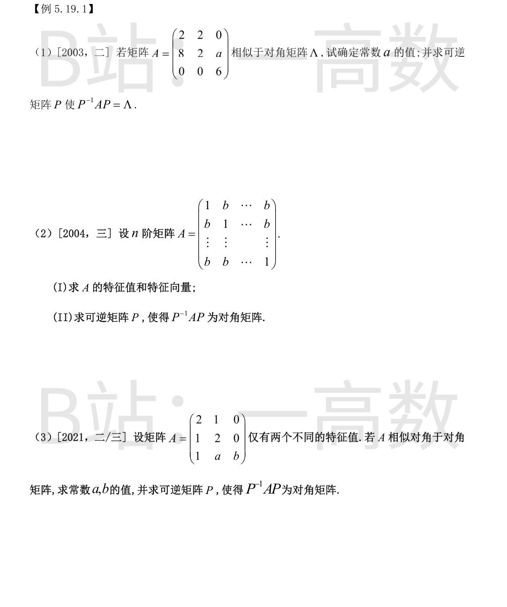
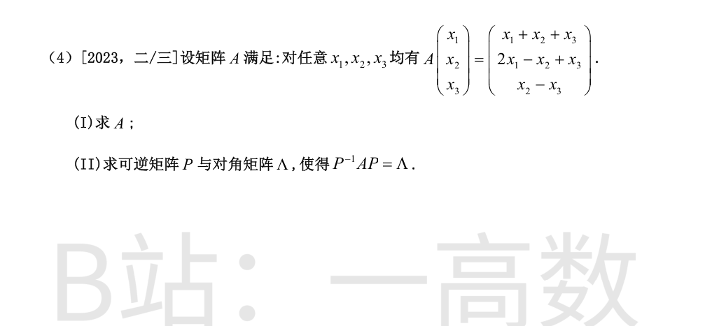
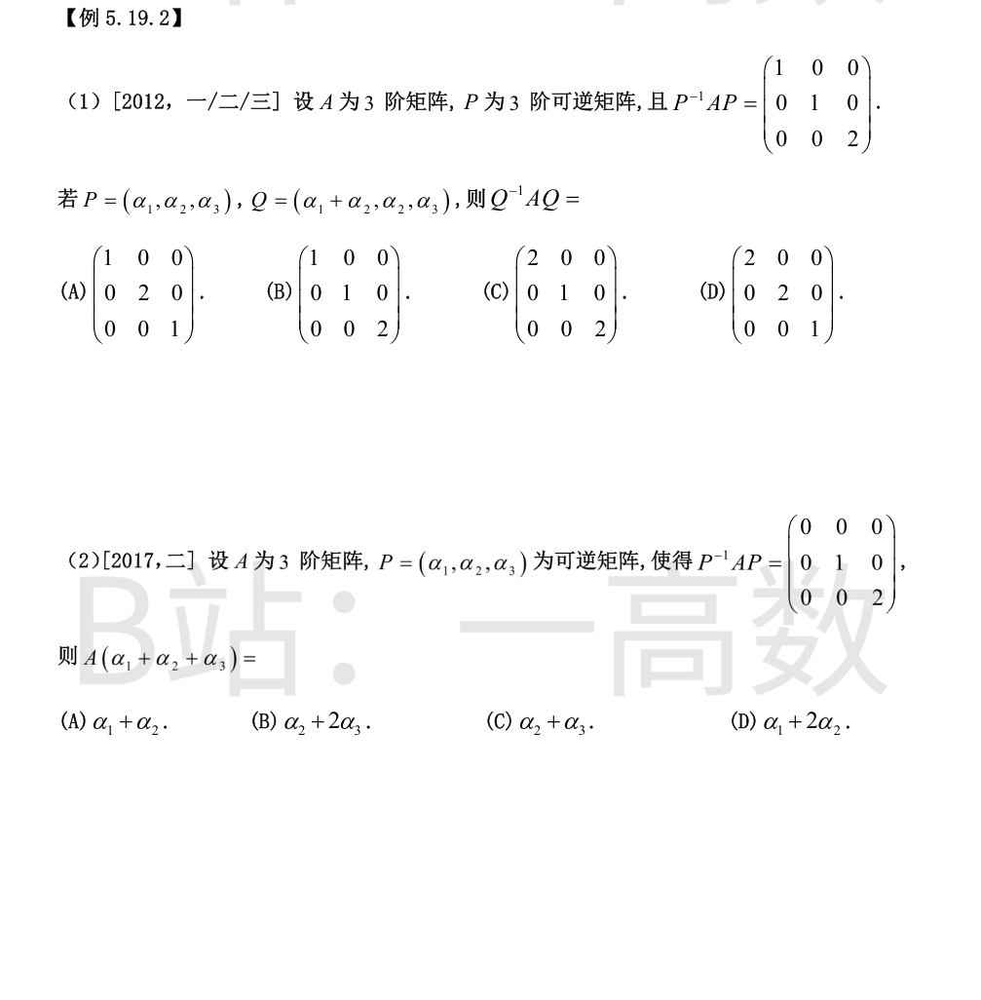
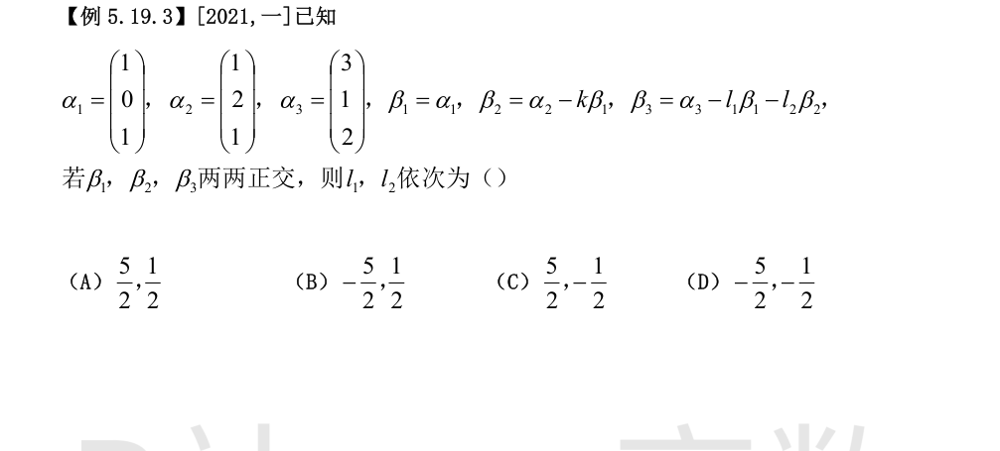
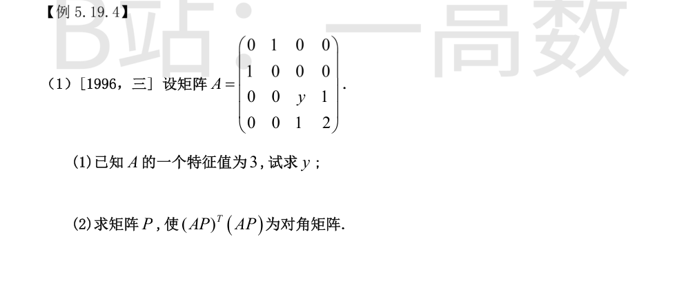

$A$ 的特征多项式按分块：$\begin{pmatrix}2&2\\8&2\end{pmatrix}$ 的特征值为 $6,-2$，另有特征值 $6$，故
$$\lambda=6\,(\text{二重}),\ -2 .$$
$A$ 可对角化 $\iff\lambda=6$ 的几何重数为 $2\iff r(A-6E)=1$。
$$A-6E=\begin{pmatrix}-4&2&0\\8&-4&a\\0&0&0\end{pmatrix},$$
第 2 行须为第 1 行的 $-2$ 倍：$(8,-4,a)=-2(-4,2,0)=(8,-4,0)$，得 $a=0$。
**特征向量**：
- $\lambda=6$：$(A-6E)x=0\Rightarrow -4x_1+2x_2=0$，得 $\xi_1=(1,2,0)^T,\ \xi_2=(0,0,1)^T$；
- $\lambda=-2$：$(A+2E)x=0\Rightarrow 4x_1+2x_2=0,\ x_3=0$，得 $\xi_3=(1,-2,0)^T$。
$$P=\begin{pmatrix}1&0&1\\2&0&-2\\0&1&0\end{pmatrix},\qquad P^{-1}AP=\Lambda=\begin{pmatrix}6&&\\&6&\\&&-2\end{pmatrix}.$$
$A=(1-b)E+bJ$，其中 $J$ 为全 1 阵。$J$ 的特征值为 $n$（特征向量 $e=(1,\dots,1)^T$）与 $0$（$n-1$ 重）。
**(I)** 故 $A$ 的特征值：
$$\lambda_1=(1-b)+bn=1+(n-1)b,\qquad \lambda_2=(1-b)+0=1-b\ (n-1\ \text{重}).$$
- $\lambda_1$：$Ae=\lambda_1 e$，特征向量 $k(1,1,\dots,1)^T\ (k\neq0)$；
- $\lambda_2$：$Ax=\lambda_2 x\iff Jx=0\iff x_1+\cdots+x_n=0$，基础解系
$$\xi_1=(-1,1,0,\dots,0)^{T},\ \xi_2=(-1,0,1,\dots,0)^{T},\ \dots,\ \xi_{n-1}=(-1,0,\dots,0,1)^{T},$$
特征向量为 $k_1\xi_1+\cdots+k_{n-1}\xi_{n-1}$（不全为 0）。
**(II)** 取
$$P=(e,\ \xi_1,\ \xi_2,\ \dots,\ \xi_{n-1}),$$
则 $P$ 可逆（列线性无关）且
$$P^{-1}AP=\mathrm{diag}\big(1+(n-1)b,\ \underbrace{1-b,\ \dots,\ 1-b}_{n-1\ \text{个}}\big).$$
$$|\lambda E-A|=(b-\lambda)\big[(2-\lambda)^{2}-1\big]=(b-\lambda)(1-\lambda)(3-\lambda),$$
特征值为 $\{b,\,1,\,3\}$。仅有两个不同特征值 $\iff b=1$ 或 $b=3$。
**情形 $b=1$**：特征值 $1,1,3$。可对角化 $\iff r(A-E)=1$。
$$A-E=\begin{pmatrix}1&1&0\\1&1&0\\1&a&0\end{pmatrix}\Rightarrow\text{第 3 行}=\text{第 1 行}\Rightarrow a=1 .$$
- $\lambda=1$：$x_1+x_2=0$，$\xi_1=(1,-1,0)^T,\ \xi_2=(0,0,1)^T$；
- $\lambda=3$：$\xi_3=(1,1,1)^T$（验证 $A\xi_3=(3,3,3)^T$）。
$$P=\begin{pmatrix}1&0&1\\-1&0&1\\0&1&1\end{pmatrix},\qquad P^{-1}AP=\mathrm{diag}(1,1,3).$$
**情形 $b=3$**：特征值 $1,3,3$。可对角化 $\iff r(A-3E)=1$。
$$A-3E=\begin{pmatrix}-1&1&0\\1&-1&0\\1&a&0\end{pmatrix}\Rightarrow\text{第 3 行}=-\text{第 1 行}\Rightarrow a=-1 .$$
- $\lambda=3$：$x_2=x_1$，$\xi_1=(1,1,0)^T,\ \xi_2=(0,0,1)^T$；
- $\lambda=1$：$A-E=\begin{pmatrix}1&1&0\\1&1&0\\1&-1&2\end{pmatrix}\Rightarrow\xi_3=(1,-1,-1)^T$。
$$P=\begin{pmatrix}1&0&1\\1&0&-1\\0&1&-1\end{pmatrix},\qquad P^{-1}AP=\mathrm{diag}(3,3,1).$$
**(I)** 取 $x=e_1,e_2,e_3$ 得 $A$ 的各列：
$$A=\begin{pmatrix}1&1&1\\2&-1&1\\0&1&-1\end{pmatrix}.$$
**(II)**
$$|\lambda E-A|=\lambda^{3}-\lambda^{2}-4\lambda+4=(\lambda+1)(\lambda-2)(\lambda+2),$$
特征值 $\lambda=-1,\ 2,\ -2$。（检验迹：$-1+2-2=-1=\mathrm{tr}(A)$。）
分别解 $(A-\lambda E)x=0$：
- $\lambda=-1$：$\xi_1=(1,0,-2)^T$（$A\xi_1=(-1,0,2)^T$）；
- $\lambda=2$：$\xi_2=(4,3,1)^T$（$A\xi_2=(8,6,2)^T$）；
- $\lambda=-2$：$\xi_3=(0,1,-1)^T$（$A\xi_3=(0,-2,2)^T$）。
$$P=\begin{pmatrix}1&4&0\\0&3&1\\-2&1&-1\end{pmatrix},\qquad
\Lambda=\begin{pmatrix}-1&&\\&2&\\&&-2\end{pmatrix},\qquad P^{-1}AP=\Lambda.$$

由 $P^{-1}AP=\mathrm{diag}(1,1,2)$：$A\alpha_1=\alpha_1,\ A\alpha_2=\alpha_2,\ A\alpha_3=2\alpha_3$。
$Q$ 的列依次为 $\beta_1=\alpha_1+\alpha_2,\ \beta_2=\alpha_2,\ \beta_3=\alpha_3$：
$$A\beta_1=\alpha_1+\alpha_2=\beta_1,\qquad A\beta_2=\beta_2,\qquad A\beta_3=2\beta_3,$$
故
$$Q^{-1}AQ=\begin{pmatrix}1&&\\&1&\\&&2\end{pmatrix},$$
选 **B**。
由 $P^{-1}AP=\mathrm{diag}(0,1,2)$：$A\alpha_1=0,\ A\alpha_2=\alpha_2,\ A\alpha_3=2\alpha_3$。
$$A(\alpha_1+\alpha_2+\alpha_3)=0+\alpha_2+2\alpha_3=\alpha_2+2\alpha_3,$$
选 **B**。

$\beta_1=(1,0,1)^{T}$，$(\beta_1,\beta_1)=2$。
$\beta_2=\alpha_2-k\beta_1$ 与 $\beta_1$ 正交：$(\alpha_2,\beta_1)-k(\beta_1,\beta_1)=2-2k=0\Rightarrow k=1$，得 $\beta_2=(0,2,0)^{T}$，$(\beta_2,\beta_2)=4$，$(\beta_2,\beta_1)=0$。
$(\beta_3,\beta_1)=0$：
$$(\alpha_3,\beta_1)-l_1(\beta_1,\beta_1)-l_2(\beta_2,\beta_1)=5-2l_1=0\ \Longrightarrow\ l_1=\frac52\quad((\alpha_3,\beta_1)=3+0+2=5).$$
$(\beta_3,\beta_2)=0$：
$$(\alpha_3,\beta_2)-l_1(\beta_1,\beta_2)-l_2(\beta_2,\beta_2)=2-4l_2=0\ \Longrightarrow\ l_2=\frac12\quad((\alpha_3,\beta_2)=2).$$
故 $l_1=\dfrac52,\ l_2=\dfrac12$，选 **A**。

**(1)** $A$ 分块对角：$\mathrm{diag}\big(A_1,A_2\big)$，$A_1=\begin{pmatrix}0&1\\1&0\end{pmatrix}$（特征值 $\pm1$），$A_2=\begin{pmatrix}y&1\\1&2\end{pmatrix}$。特征值 3 只能来自 $A_2$：
$$|A_2-3E|=(y-3)(-1)-1=2-y=0\ \Longrightarrow\ y=2 .$$
**(2)** $y=2$ 时 $A$ 实对称，$A^{T}A=A^{2}$ 为分块对角：
$$A^{2}=\begin{pmatrix}I_2&\\&\begin{pmatrix}2&1\\1&2\end{pmatrix}^{2}\end{pmatrix}
=\begin{pmatrix}1&0&0&0\\0&1&0&0\\0&0&5&4\\0&0&4&5\end{pmatrix}.$$
$$(AP)^{T}(AP)=P^{T}A^{2}P .$$
取 $P$ 为正交矩阵，其列为 $A^{2}$ 的特征向量：
- $\lambda=1$：$e_1=(1,0,0,0)^{T},\ e_2=(0,1,0,0)^{T}$；
- 二阶块 $\begin{pmatrix}5&4\\4&5\end{pmatrix}$：$\lambda=9$ 对应 $\dfrac{1}{\sqrt2}(0,0,1,1)^{T}$，$\lambda=1$ 对应 $\dfrac{1}{\sqrt2}(0,0,1,-1)^{T}$。
则
$$(AP)^{T}(AP)=\mathrm{diag}(1,\,1,\,9,\,1).$$